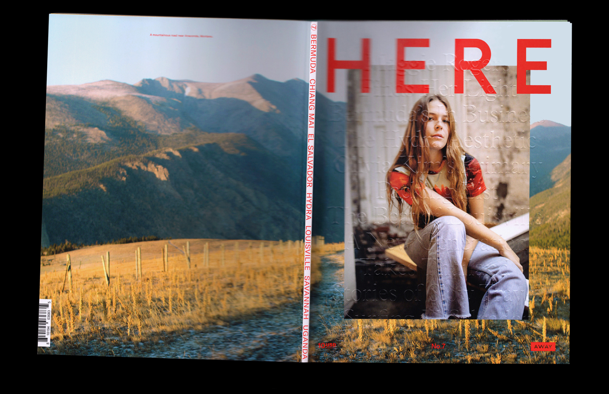
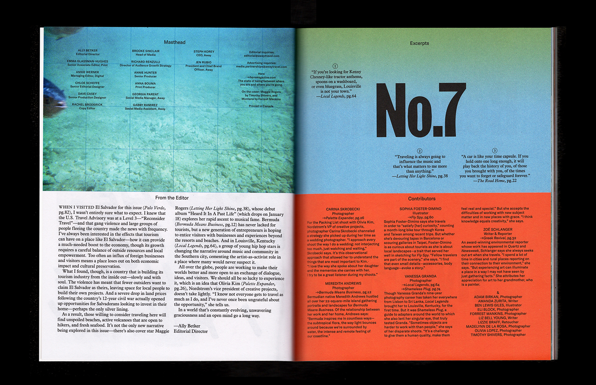
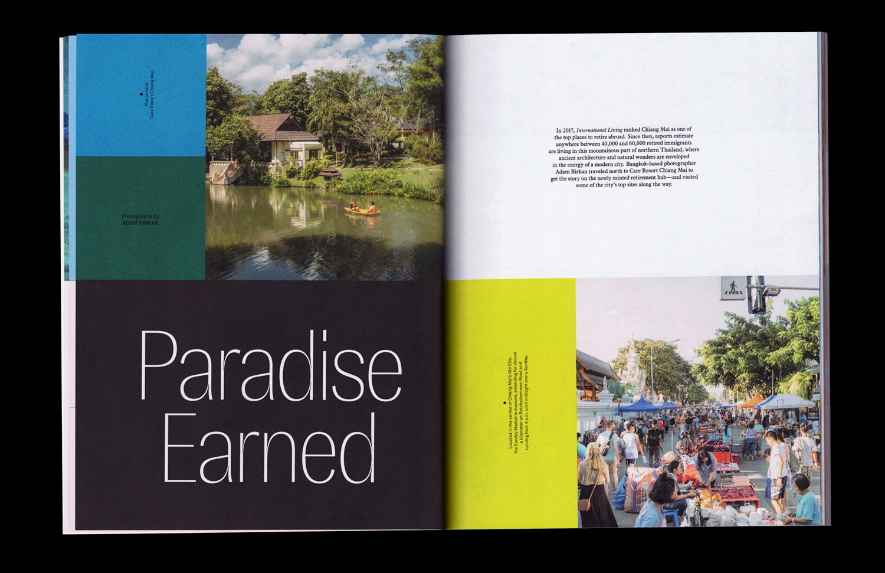
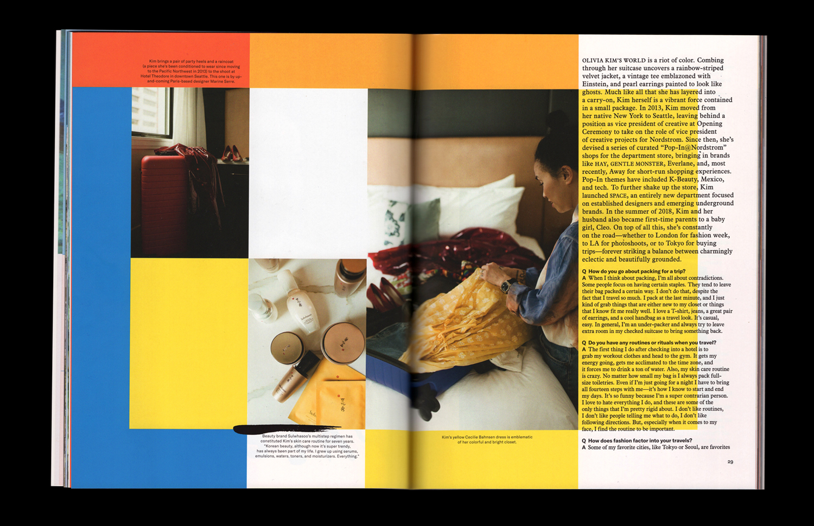
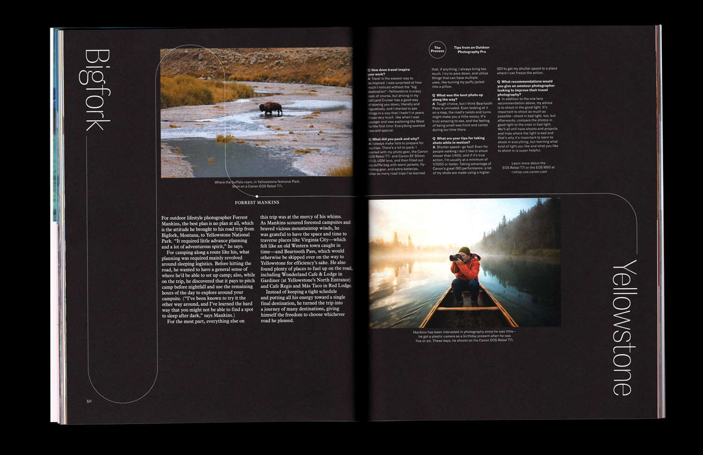
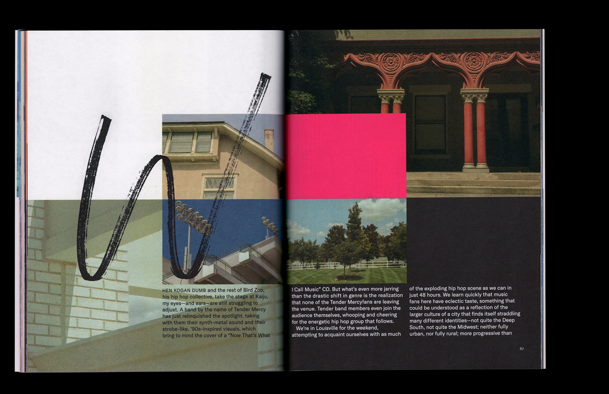
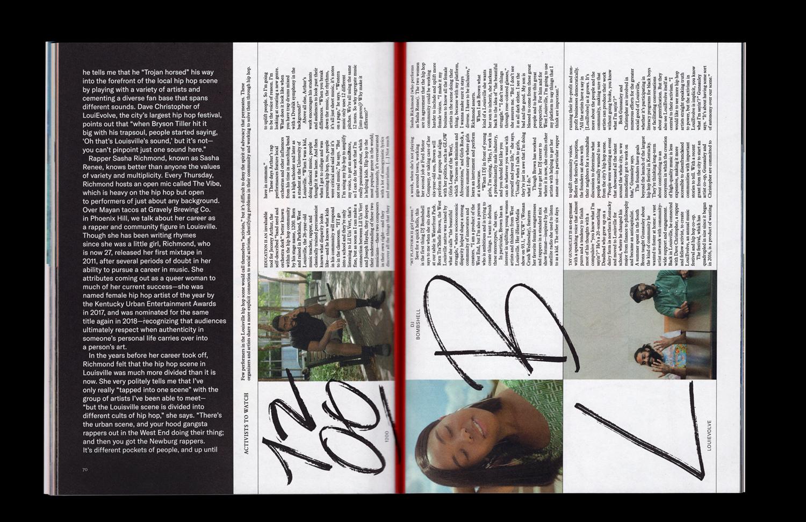
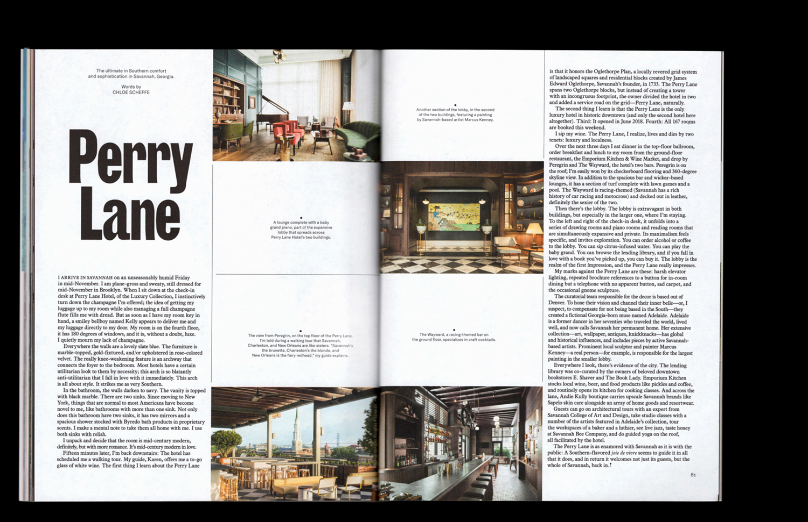
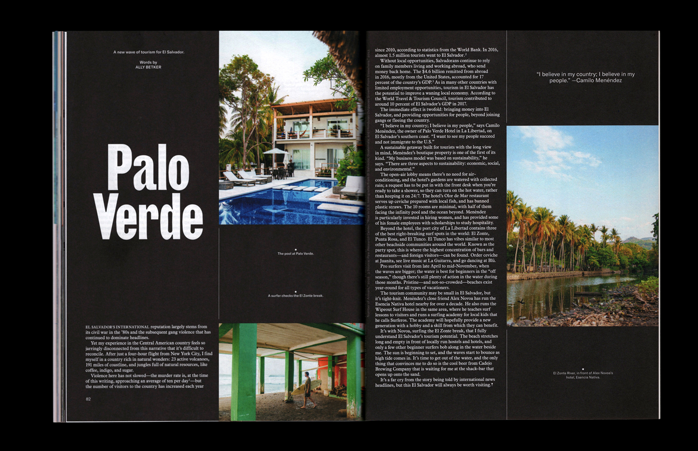
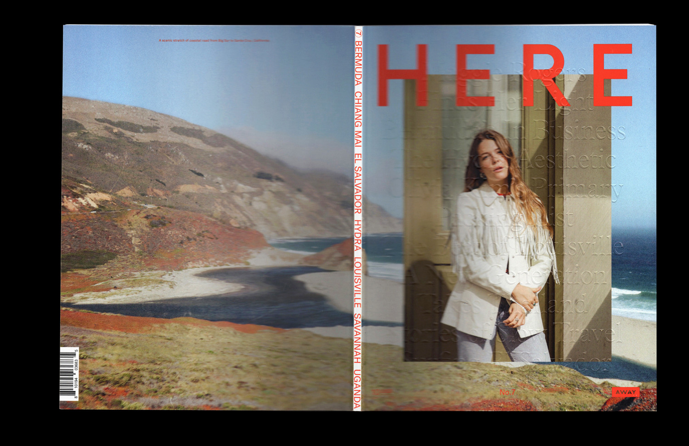

Issue 7
Here Magazine (Away)
Issue (84pp, cover with spot red and emboss)
2019
A complete redesign of Here. When we think of travel, we imagine cities, streets, and storefronts—the hyper-local. I wanted Here's readers to instinctively feel on the ground in the places we cover, so I created a modular grid system founded on maps and a typekit inspired by ephemera and signage. The design is lively and lush, and rejects the trend toward minimalism that has resulted in a homogeneous landscape of indie travel magazines. Issue 7 takes readers to Chiang Mai, Hydra, Seattle, Louisville, Uganda, Bermuda, and more. Contributors include illustrators Sophia Foster-Dimino and Ben Giles, photographers Adam Birkan and Carina Skrobecki, and writer Liz Bell Young.


Contents and editor's letter:

'Paradise Earned', about retirees in Thailand:

'The Road Home', an essay on living in Italy and loving a gold Volvo:
'Palette Expander', an interview with Olivia Kim:

'Letting Her Light Shine', featuring cover star and pop musician Maggie Rogers:
 'Long Exposure', on three road trips in the American west:
'Long Exposure', on three road trips in the American west:

 'Fly Spy', about the travelers we all know and love:
'Local Legends', spending time with Louisville's rising hip hop class:
'Fly Spy', about the travelers we all know and love:
'Local Legends', spending time with Louisville's rising hip hop class:

'Shameless Plug', a Memphis-inspired guide to travel adapters:
 'Perry Lane' and 'Palo Verde', on places worth traveling for:
'Perry Lane' and 'Palo Verde', on places worth traveling for:

'Here With', on the ground with a local:
Alternate cover:
